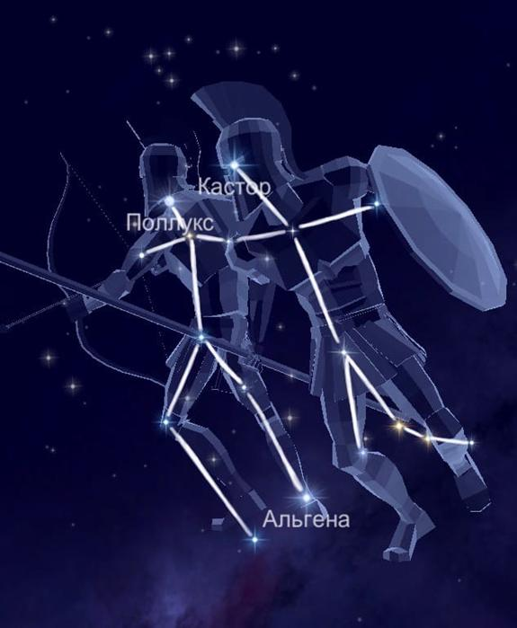

Итак, созвездие Близнецов
на небе имеет не менее известных соседей: Рак, Возничий, Малый Пёс,
Телец, Орион и Единорог.
Можно сказать, что созвездие среднее по размеру. Так занимаемая им
площадь 514 квадратных градусов ставит его на 30 место среди всех
участков. Миф о происхождении.
Близнецы -
это зодиакальное созвездие, изображающее двух братьев-близнецов,
Кастора и Поллукса. Поллукс, как сын бога, был бессмертным и славился
своей силой, в то время как его смертный брат Кастор был известен, как
искустный наездник и знаток лошадей. Оба брата стали аргонавтами и
отправились на поиски золотого руна, и затем сражались в Троянской
войне, чтобы вернуть свою сестру домой к ее мужу, Менелаю. Поллукс был
преисполнен горя, когда умер его смертный брат, и умолял Юпитера
позволить ему отдать брату часть своего бессмертия. Признав доблесть
обоих братьев, Юпитер согласился и воссоединил их на небесах.
Звёзды, образующие созвездие Близнецы.
Альфа —
Кастор. Она является двоичной звездой, второй по яркости на своём
участке.
Бета — Поллукс. По праву относится к оранжевым гигантам. Это самый
яркий элемент созвездия. Не так давно на его орбите обнаружили
экзопланету. Гамма — Альхена выражена белым субгигантом.
Эпсилон — Мебсут сверхгигант.
Мю представляет собой красный гигант.
Кси и Дельта желто-белые субгиганты.
Каппа многократное светило, а вот Лямбда и Йота — Пропус переменные
звезды.
Дзета — Мекбуда состоит из сверхгиганта и переменного светила.
Тау — оранжевый субгигант.
U Близнецов это новая карликовая двойная звезда.
К радости российским
астрономам, созвездие хорошо различимо из любой точки. Но считается,
что лучшее время для этого с декабря по январь.
|

|